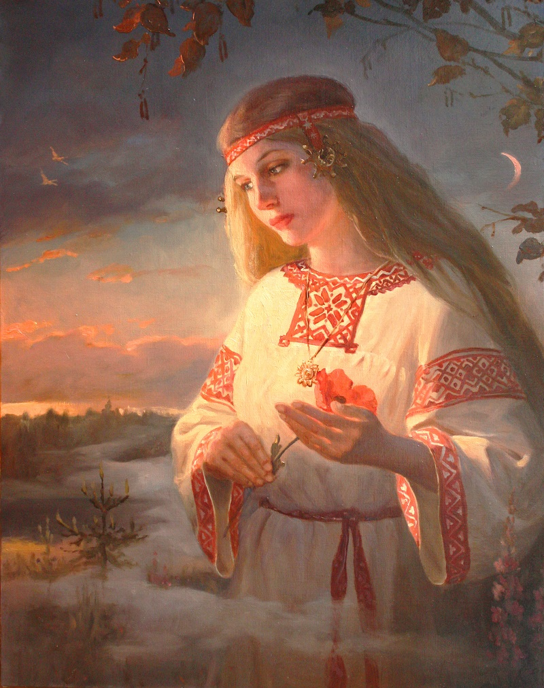

РОДОВАЯ ПАМЯТЬ

Родовая память - это записанный в подсознании жизненный опыт всех наших Предков. Подсознание есть хранилище Души, где хранится информация обо всем, вся память и все программы. Подсознание является структурами Души человека, в основе которой находятся молекулы ДНК, поэтому Родовую память называют также еще и генетической.
Изучение Ведической культуры, достояния наших Предков, погружение в нее и пробуждение Родовой памяти, позволяет получить целостное представление о Мире, в котором мы живем, и получить ответы на все возможные вопросы. Пробуждая Родовую память, мы сразу же можем почувствовать отклик в своей Душе и появление живых вибраций, безграничное расширение сознания и границ, привычных для нас взглядов, насильственно внедренных в наше сознание социумом. К сожалению, именно эти навязанные нам взгляды и разорвали естественную Родовую связь с нашими Предками. А что произойдет с человеком, если лишить его Родовой памяти? То же самое, что произойдет и с лишенным корней деревом - оно неизбежно засохнет и погибнет. Так и человек – лишенный связи со своими Предками, своей Родовой памяти, он обречен на неминуемую деградацию и исчезновение. И наоборот, человек, пробудивший свою Родовую память и живущий в ладу со своей совестью и с Природой, получает в свое распоряжение всю Силу и Знания своих Предков. Родовая Память - состоит из трех основных частей: 1. Память Сути. 2. Память Предков. 3. Память перинатального периода и после рождения 3-5 летнего возраста, до появления анализатора.
Рассмотрим для начала, что есть Суть. Суть - это объемная энергоструктура, в которую входит: Дух, Душа, 9 тел человека и живет эта структура во всех мирах и временах одновременно, (обычный человек живет в нескольких мирах одновременно: материальном, эмоциональном и интеллектуальном).
Что касается времени, то здесь, то же все просто, любой человек может в своей памяти вернуться в прошлое, а некоторые проникают сознанием и в будущее. На этой основе и построена как чистка Родовой памяти, так и приобретение способностей, которые были у Предков. Суть перед воплощением в Явный мир - ставит перед собой определенные задачи и после этого, выбирает себе место, время и Род, в котором она воплотиться и выбор этот соответствует качествам Сути и её поставленным задачам. Суть, не воплощенная имеет огромное влияние на своих будущих родителей, она с начало подталкивает их к соитию, для зачатия тела, а потом неотступно следит и помогает матери и отцу формировать свое будущее вместилище. Поэтому женщина в состоянии беременности ведет себя порой не адекватно. После того, как тело полностью сформировано, наступает момент рождения в явный мир. К этому процессу наши Предки относились особенно внимательно: чтоб тело родилось без физических травм и в определенное время. Суть вселяется в тело в первые, 20 минут жизни ребенка после родов и включает в теле все механизмы жизнеобеспечения (дыхание, пищеварение, работу всех внутренних органов). После вселения в тело, Суть на протяжении 5 лет проделывает огромный труд по формированию личности, для взаимодействия с явным миром. Вернемся теперь к Памяти Сути. В памяти Сути содержится информация: о мире, где её создали Боги Творцы (небесные родители), о прошлых воплощениях и о целях и задачах на данное воплощение и о основных характерных чертах человека. Наши Предки с особым вниманием относились к раскрытию у чада именно этой памяти и человек, у которого это память была открыта, считался живущим и ведающим свой ПУТЬ В ЖИЗНИ. Вся наша ведическая традиция направлена на помощь в раскрытии Памяти Сути и выполнение предназначения. В нашей повседневной жизни, к сожалению, основная масса людей на ведают, зачем они пришли в явный мир, и получается, как в том анекдоте, пошел в магазин за маслом, пока шел, забыл, за чем шел, пришел в магазин про масло так и не вспомнил, купил хлеба, пришел домой хлеба стало еще больше, а масла как не было, так и нет. Вот и придется еще раз идти в магазин, и хорошо, если он круглосуточно работает. Люди проживают жизнь и только после смерти понимают, что всю жизнь в явном мире занимались не тем чем надо. Данную тему можно ещё долго развивать, но перейдем ко второй части Родовой Памяти.
Память Предков – это память, которую Суть получает по наследству и Отца и Матери. В этой памяти содержится информация о Земном Роде, отца и матери, все их наследственные качества (как положительные, так и отрицательные), поэтому Предки очень внимательно относились к Законам Рита, потому что это напрямую зависело выживание Рода. Например, воинский Род, для представителя данного Рода были присуще такие качества как: Честь, сила Духа, отвага, смелость, жертвенность, связь с Богами Покровителями и эти качества передавались по наследству и раскрывались в процессе воспитания. Соответственно, чтоб эти качества передались в полном объеме и не потерялись, нужно было невесту подбирать из соответствующего Рода и желательно девственницу. В обратном случае воинские качества терялись, и Род переходил в другое сословие, в другую форму (когда рождались одни девочки в семье) или погибал вообще.
К сожалению, многие Рода, после Ночи Сварога и эпохи Лисы, находятся не в лучшем состоянии: забыты родовые традиции и устои, наследие и деяния Предков, мало кто знает свои Родовые качества. Родовые Деревья в саду Сварога, в срединном мире (Мидгарде), каждое имеет свои индивидуальные особенности и качества (яблоня, груша, слива и т.д.), так и в каждом Роду есть свой неповторимый Божий Дар, который необходимо раскрыть, приумножить и передать по наследству. Для этого сейчас, в явный мир рождаются более зрелые Сути, которые раньше всех в Роду пробуждаются и начинают наводить порядок: бросают пить и курить, стремятся к возрождению исконных устоев. Их мало кто из родственников понимает, их считают чокнутыми сектантами, именно они сейчас читают эту статью, и именно они в Роду считаются по-настоящему, живыми, и именно им сейчас всеми силами помогают: ЛАДА – МАТУШКА, СВАРОГ БАТЮШКА и их ПЕРУН И ВЕЛЕС. Перун Дух Пробуждает, а Велес вырубает старые и больные ветки. Многих, чтоб сохранить Породу прививают к более сильным Родам (приемные дети, остающиеся с отцовской фамилией). Эту тему тоже можно ещё долго продолжать, но мы перейдем к третьей части Родовой Памяти.
Память перинатального и периода и после рождения до 3-5 лет. Наше тело на протяжении всей жизни записывает все, что с ним происходит, не зависимо в сознании человек или нет. Если без сознания, то запись происходит линейно, а если в сознании, то сознание анализирует и раскладывает по полкам. Записываются все слуховые, зрительные, тактильные, болевые (как физическая боль, так и моральная), в общем, все, что человек может почувствовать, называется эта запись ДОРОЖКА ВРЕМЕНИ. Вот по этой дорожке можно путешествовать. В наследственной памяти сына отпечатывается все, что произошло с отцом до момента зачатия сына, а у отца память деда и так до основателя Рода. На дорожке времени особой строкой идет запись болевых ощущений, именно они играют основную роль в формирование событий в жизни человека и его реакцию на эти события.
Приходя в этот мир, каждый из нас получил всё необходимое для долгой и счастливой жизни. Все Знания и Мудрость Предков сокрыты в нашей Родовой памяти, поэтому каждый из нас всё знает с момента своего рождения, нужно только вспомнить. Чтобы можно было вспомнить – необходимо раскрыть свое Сердце и развить свое сознание, увидеть за внешними проявлениями вещей их суть, ОБРАЗ… Только через ОБРАЗ возможен доступ к огромному банку информации, где хранится информация обо всём. Воображение поможет точно настроиться на выполнение поставленной задачи. Концентрация внимания позволит пребывать в требуемом состоянии необходимое время. Вход в состояние безмыслия откроет двери в подсознание и на заданный вопрос придут нужные ответы в виде ОБРАЗОВ. Все эти навыки являются необходимыми ключами для пробуждения Родовой памяти.
В естественных природных условиях Родовая память пробуждается сама. Пробуждается через голос матери, через родной язык, через пение птиц, через народные песни, через кружение в хороводе, через твердую неспешную поступь по родной Земле, через общение с природой и через многое другое. Возникает естественное чувство единения со своим Родом, ясное ощущение причастности к нему и осознание тесной взаимосвязи поколений. Человек, пробудивший Родовую память, обретает огромную внутреннюю силу и уверенность в себе, понимает свою ответственность за жизнь и благополучие близких, способен естественным образом проявлять сердечность и доброту. Таким человеком невозможно манипулировать и его невозможно заставить пойти на сделку со своей Совестью. Такого человека невозможно победить или сломить его Дух.
Однако навязанный социумом образ жизни делает невозможным естественное пробуждение Родовой памяти. Причин тому множество – искажённый язык, сбой естественных природных ритмов, замена живого дома на мёртвые железобетонные стены, воздействие на человека множества неблагоприятных факторов, уничтожение правильного образования…
А поскольку Родовая память молчит, то человек лишается естественной связи со своим Родом, со своими корнями, лишается доступа к Знаниям и Мудрости Предков, лишается ориентиров по жизни и той естественной опоры, которая дана была ему по факту рождения. Такой человек превращается в комок пластилина, из которого можно лепить что угодно. Всё что остаётся сделать для этого – просто предоставить ему определенную информацию с целью формирования требуемых взглядов и моделей поведения. Вот почему возникла потребность в так называемом «образовании», через жернова которого прошёл каждый из нас. Вот почему потребовалось выполнить подмену самого понятия ОБРАЗОВАНИЕ. В современном понимании «Образование» – это процесс обучения сторонними педагогами всех без исключения индивидов в специально созданной для этого системе учреждений, с целью формирования личности, ориентированной на соответствие определенным социальным эталонам, таким как добродетельный христианин, энергичный предприниматель и т.д. В действительности же ОБРАЗОВАНИЕ - это ваяние ОБРАЗА, т.е. творческий процесс, который подразумевает необходимость выполнения человеком определенной внутренней работы, присутствие личного устремления, создание намерения, приложение умственных усилий и многое другое. Т.е. это целиком и полностью созидательная деятельность.
Вот почему так важно пробудить Родовую память и восстановить свои связи с Родом. Это позволит раскрыть заложенные в человека потенциальные возможности, познать себя и приобщиться к знаниям, мудрости и духовному опыту Предков.
Однако прежде чем приступать к пробуждению Родовой памяти, необходимо понять, что такое память, какие виды памяти существуют и где она хранится.
Память – это одна из психических функций и видов умственной деятельности человека, предназначенная для сохранения, накопления и воспроизведения информации и накопленного человеком опыта. Способность хранить информацию о событиях внешнего мира и реакциях организма позволяет многократно использовать её в сфере сознания для последующей деятельности.
Основные виды памяти:
1. Мгновенная память: характеризуется запоминанием только что полученной информации без её осознания и осмысления. Время хранения полученной информации от 0,1 до 0,5 секунд.
2. Кратковременная память: полученная информация хранится 15-20 секунд, она не запоминается сознательно, но готова для воспроизведения.
3. Оперативная память: информация способна храниться нескольких дней, необходима для выполнения определенной работы, после чего стирается.
4. Долговременная память: срок хранения информации - длительный, может быть многократно воспроизведена в любое время. В качестве носителя памяти могут выступать нейронные связи головного мозга, кластеры воды в жидких средах организма, белковые и кристаллические структуры организма. Нейронные связи головного мозга активно формируются у ребенка вплоть до 5-ти летнего возраста, создавая неповторимые узоры коры головного мозга, которые представляют собой резонансные контуры, обеспечивающие обмен энергоинформационными сигналами с окружающим миром. Многочисленные эксперименты показали, что память хранится не в каком-то определённом участке мозга, а рассредоточена по всему объёму мозга. Объяснение этому было дано в 1960-х годах, когда нейрофизиологами был применен принцип голографии к механизму запоминания, что позволило рассматривать мозг как голографическую структуру. Водные кластеры формируются благодаря ковалентным и водородным связям под влиянием психоэмоционального состояния человека и внешних полей различного происхождения. Белковые структуры формируются в процессе различных биохимических реакций, в том числе связанных с проявлением эмоций, и начинают проявлять себя как макромолекулы с определенными резонансными частотами. Кристаллические структуры, такие как, например, мозговой песок эпифиза, содержат различные соли (кальция, магния и др.) и примеси (стронций, цинк, магний, натрий, железо, сера и др.), и являются носителями голограмм, задающими ритм пространственно-временного существования организма, и способны в течение продолжительного времени сохранять однажды записанную на них информацию, что объясняет, почему пожилым людям так сложно менять черты своего характера или модели поведения. Информация, которая хранится на перечисленных выше носителях, может быть перезаписана с помощью определенных методов и энергоинформационных воздействий.
5. Генетическая, Родовая память: наследственная информация об отдельно взятом человеке, которая отражена в его ДНК и передается по наследству. В ДНК записана программа построения организма человека в пространстве и времени в виде многомерного, образно-волнового кода, а также ДНК содержит информацию обо всех тех людях, кто принадлежит к данному Земному Роду человека. При этом на уровне ДНК представлена только часть информации, основная же часть информации хранится в информационном поле, которое названо морфогенетическим. Каждый человек обладает индивидуальным морфогенетическим полем.
Информацию в морфогенетическом поле хранят солитоны - необычные волны, которые могут существовать очень долго и которые способны запоминать условия своего возбуждения. Материальным носителем морфогенетического поля является физический вакуум. При этом морфогенетическое поле постоянно меняется, отражая динамику развития человека. Все чувства, желания и фантазии, поступки, эмоции и т.д. – все они фиксируются в поле человека. Развитие человека влечет за собой соответствующие изменения на уровне ДНК, что оказывается возможным благодаря транспозонам. Транспозоны – это блуждающие гены, которые принадлежат своей ДНК и лишь меняют свое пространственное расположение в соответствии с изменениями морфогенетического поля. Открытие транспозонов и особенности их поведения подтверждают хромосомную теорию наследственности.
Перезапись информации на уровне морфогенетического поля невозможна, однажды записанная она хранится вечно, поэтому не имеет значения, сколько времени прошло с момента какого-либо события и жив или нет интересующий нас человек. С помощью мозга человек может настроиться на морфогенетическое поле точно так же, как мы настраиваем радиоприемник на радиоволну, что позволяет при соблюдении определенных условий и точной настройке получить необходимую информацию о своих Предках.
6. Народная память. Совокупность индивидуальных морфогенетических полей людей, принадлежащих к той или иной нации, народу, этнической группе и т.д., и объединенных в общее морфогенетическое поле. Народная память хранит информацию обо всём, что происходило со всеми входящими в Роды за всё время их существования, весь их уникальный опыт побед, ошибок и их преодоления.
Хроники Акаши (Банк данных Вселенной): содержат в себе весь человеческий опыт и всю историю возникновения Вселенной. Для определения Хроник Акаши наиболее точными являются образные аналогии со «Всемирной библиотекой», «Вселенским компьютером» или «Разумом Бога». При этом каждый пространственно-временной участок, каждая песчинка Мироздания связана со всем сущим и содержит в себе полную информацию о всей Вселенной, включая информацию о прошлом, настоящем и будущем, что находит объяснение с введением понятия голографической Вселенной. Содержащаяся в Хрониках Акаши информация постоянно обновляется одновременно с происходящими во Вселенной событиями. Материальным носителем Хроник Акаши является физический вакуум, абсолютное ничто, которое содержит в себе всё. Таким образом, Родовая память – это информация, которая хранится на уровне индивидуального морфологического поля человека, содержащая полную информацию о ВСЕХ Предках человека, принадлежащих к данному Земному Роду, доступ к которой возможен при соблюдении определенных условий и выполнении точной настройки.
Важно понимать, что существует большая разница между естественно возникающими изменениями в структуре ДНК в результате развития человека, что влечёт за собой изменение его морфогенетического поля и соответствующие перемещения транспозонов внутри ДНК, и искусственно вызванными изменениями в ДНК, связанными с привнесением в ДНК чужеродных фрагментов. Если в организм человека тем или иным способом попадают фрагменты чужеродных ДНК, и организм в силу различных причин не может себя от них защитить, то они встраиваются в ДНК и меняют её образно-волновой код. Это приводит к затуханию резонансов между структурами ДНК и связанным с ней морфогенетическим полем. При появлении небольших искажений в структуре ДНК частичное затухание резонансов ограничит доступ к морфогенетическому полю в целом, однако частичное пробуждение Родовой памяти в этом случае окажется возможным. Если искажения в структуре ДНК будут значительны, то произойдёт полное затухание резонансов, что сделает невозможным пробуждение Родовой памяти. Это равносильно тому, как если бы человек решил открыть дверь в библиотеку не своим ключом, а ключом от чужого замка.
Далее, необходимо научиться работать со своими сознанием, сверхсознанием, подсознанием. Мы живём и развиваемся в океане информации, при этом наши органы чувств, мыслительная деятельность, модели поведения и связанные с ними эмоциональные проявления непрерывным потоком загружают сознание огромным потоком информации. Поэтому для того, чтобы можно было получить требуемую информацию с информационного поля, необходимо уметь останавливать весь этот бурлящий поток, уметь входить в состояние умственной тишины и определенным образом настраиваться, сохраняя при этом чистоту помыслов, ясный ум, твёрдое намерение и любящее сердце. Полученный навык работы с подсознанием позволяет применять язык общения с помощью образов для получения информации с информационного поля.
Но также и физическое тело должно быть подготовлено. Особые требования предъявляются к нормальному функционированию мозга и целостности биополя человека. От того, насколько хорошо функционирует мозг, будет зависеть, насколько хорошо он сможет излучать и принимать энергоинформационные сигналы, а от этого, в свою очередь, будет напрямую зависеть возможность получения информации от морфогенетического поля Рода.
Далее, необходимо сформировать чёткое намерение пробудить Родовую память. Важно осознать, что даёт пробуждение Родовой памяти:
1. Человек, пробудивший Родовую память, обретает огромную внутреннюю силу и уверенность в себе.
2. Человек, лишённый Родовой памяти, неизбежно деградирует.
3. Сила Рода становится доступной твоей силой, если твоё Сердце пребывает в ладу с ним.
4. Наследуя кровь Предков, человек наследует Знания и Мудрость, которыми владели Предки.
5. Каждый, кто един с Родом, получает доступ к духовным первоистокам всего сущего.
Следующим шагом должно быть исключение различных факторов, препятствующих пробуждению Родовой памяти, и восстановление при необходимости вызванных ими искажений ДНК.
Пробуждению Родовой памяти препятствуют:
Подключение к неродным эгрегорам - выполняемые различные ритуалы не родной веры Предков является действием, предназначенным для вывода человека из Рода и блокирования нормальной работы его энергоинформационных центров. Любые попытки разорвать связь с чужеродным эгрегором при помощи обычных способов опасны и безрезультатны, т.к. отказ от связи с эгрегором означает отказ от частички самого себя.
Кровосмешение - межрассовые браки приводят к искажению структур ДНК, в результате чего становится невозможным подключение к информационному полю Рода. Кроме того, у рождённых в межрассовых браках детей снижен иммунитет, растёт восприимчивость к инфекционным заболеваниям, ухудшается работа эндокринной системы, имеют место нарушения в деятельности высшей нервной и умственной деятельности.
Употребление продуктов с ГМО (генетически модифицированные организмы) – это продукты питания, созданные при помощи генной инженерии. Употребление продуктов с ГМО негативно влияет на работу желудочно-кишечного тракта, приводит к постепенному понижению иммунитета, развитию онкологических заболеваний и т.д. Кроме того, постоянное употребление продуктов с ГМО приводит к горизонтальному переносу ДНК, т.е. ДНК до конца не переваривается, и его небольшая часть интегрируется в ядро клетки, после чего становится частью хромосомы. Это приводит к искажению ДНК, провоцирует развитие безплодия и делает невозможным пробуждение Родовой памяти.
В настоящее время продукты с ГМО присутствуют практически во всех видах основных продуктов питания, прежде всего в муке, сахаре, кондитерских и хлебобулочных изделиях, мясе животных, которые употребляли ГМО продукты и т.д., и т.п.
Донорство - кровь и трансплантируемые органы имеют собственнуюбиохимическую память и энергетику. В результате переливания крови или пересаживания органа от донора реципиенту происходит взаимное влияние индивидуальных программ и информации друг на друга, в результате чего меняются черты характера и привычки, происходит искажение структур ДНК, что будет препятствовать подключению к информационному полю Рода. Кроме того, между донором и реципиентом возникает непрерывная энергоинформационная связь, поэтому велик риск того, что они будут болеть болезнями друг друга. В случае смерти одного из них, происходит ухудшение здоровья другого по необъяснимым с точки зрения современной медицины причинам.
Проведенное ультразвуковое исследование (УЗИ) - ультразвук поражает клетки мозга и вносит сбой в работу ДНК. Во время ультразвукового облучения двойные спирали ДНК расплетаются и даже разрываются.Если хотя бы однажды было проведено ультразвуковое обследование, либо применялись в быту ультразвуковые мини-стиральные машины и различные устройства по отпугиванию крыс, мышей и т.д., то человек получил дозу ультразвукового облучения. Нарушения в структуре ДНК делают невозможным пробуждение Родовой памяти.
Попадание в организм чужеродного геноматериала - если организм ослаблен, то при попадании в него фрагментов чужеродной ДНК, он не в состоянии сам себя защитить, и они встраиваются в ДНК, меняя её образно-волновой код. Попадание в организм человека фрагментов чужеродной ДНК может происходить разными способами: 1. через телесный контакт с другими людьми через рукопожатия, объятия, поцелуи (наши Предки приветствовали незнакомцев простым прикладыванием руки к сердцу); 2. через лекарства, содержащие чужой генетический материал; 3. у верующих в результате физического контакта через прикасание и целование предметов культа, таких как иконы, кресты, мощи, камни, статуи и т.д. Все эти предметы содержат геноматериал ранее прикасавшихся к ним людей, и, кроме того, на эти предметы могут наноситься различные специально приготовленные составы и масла, содержащие чужеродные и опасные для здоровья компоненты.
Искажение языка - делает невозможным возникновение естественной резонансной связи при помощи звука (вибрации) с соответствующими речеподобными структурами ДНК, представляющими собой волновой код доступа к морфогенетическому полю человека и его Родовой памяти. Чтобы иметь такой доступ, вибрационная составляющая нашей речи должна быть узнаваема и понятна ДНК, созвучна ей. В действительности этого сейчас не происходит. Многовековая деятельность, нацеленная на превращение образного Праязыка в безОбразный и его постоянное упрощение, привела к деградации языка. Удалены из обращения, либо искажены БУКВЫ, несущие в себе код построения живой материи. Вместо них предложены лишённые смысла буквы, в результате чего язык стал мёртвым и чужеродным для нашей ДНК. По этой причине использование современного языка делает невозможным возникновение созвучия (резонанса) с речеподобными структурами ДНК и получение доступа к Родовой памяти.
Безнравственный образ жизни, непристойное поведение.
Наркозависимость. Алкоголь. Курение.
Отсутствие Совести, совместной вести человеческой души и Светлых Богов. Только при наличии совести образуется структура Человека – Тело-Душа-Дух-Совесть, являющаяся своеобразным порталом для подключения к Родовой памяти.
Воздействие чужеродных программ - через телевидение, радио, СМИ, сеть Интернет при помощи специальным образом подготовленной информации и различных способов, и методов воздействия на подсознание человека с целью внедрения определенных идей или представлений, позволяющих оказать скрытное воздействие на психические структуры человека и изменить его психическое состояние или поведение в требуемом направлении. Научно-технические изобретения сделали возможной невиданную ранее скорость передачи информации, причем одновременно для многомиллионной аудитории, но при этом оказалась столь же возможной интенсификация информационно-психологической войны, выражающейся в манипуляциях индивидуальным и общественным сознанием.
Вакцинация. В возрасте до 5 лет идёт активное формирование нейронных связей в головном мозге ребенка. Прививание детей в этот период приводит к повреждению нейронов головного мозга, развитию аутизма и, как следствие, к затормаживанию развития ребёнка. Аутизм - это не болезнь, а нарушение развития ребенка, поэтому его нельзя вылечить с помощью обычных медикаментов. Аутизм приводит к нарушениям физической, умственной и эмоциональной сфер ребёнка, вызывает серьёзные проблемы с памятью и вниманием, что представляет собой значительное препятствие для пробуждения Родовой памяти. Особую опасность несут в себе компоненты, входящие в состав вакцин:
1. Ртуть, используемая в вакцинах в виде диэтилртути, является нейротоксином и по степени токсичности находится на втором месте после урана - радиоактивного вещества. В сочетании с алюминием и формальдегидом токсичность ртути многократно возрастает. В головном мозге, состоящем в основном из жировых клеток, скапливается бóльшая часть ртути, что приводит к развитию у детей аутизма. Многокомпонентные вакцины, такие как АКДС, также вызывают у детей регресс в развитии, что даёт основание считать их важнейшей причиной аутизма. В последние годы количество зарегистрированных случаев аутизма возросло втрое и составляет в среднем 1 случай на 1000 детей.
2. Многие вакцины содержат бактериальные и вирусные ДНК и микроорганизмы, такие как раковый обезьяний вирус, цитомегаловирусы, мутировавшие вирусы собак, обезьян, уток, простейшие одноклеточные (например, акантамёба, которую называют «амёбой, пожирающей мозг»). При этом вакцины вводятся напрямую в кровь, минуя естественные защитные барьеры организма, в результате чего происходит не только его отравление, но и выводится из строя имунная система, чужеродные бактериальные и вирусные ДНК встраиваются в ДНК человека, меня её изначальную структуру.
3. При производстве некоторых вакцин в качестве исходного сырья используются трупные органы и кровь людей, умерших от тяжёлых заболеваний, из которых выделяют вакцинные вирусы, либо для этих целей используют больных, генетически дефектных животных - например, мышей специальных «раковых линий» (AKR), изначально предназначенных для проведения онкологических экспериментов. После размножения вирусов их инактивируют (т.е. убивают) формальдегидом - мощным протоплазматическим ядом, мутагеном и канцерогеном, который обычно применяется для бальзамирования трупов. При этом сам формальдегид никуда не девается, он весь остается в объеме вакцинной дозы.
Зашлакованность организма - нарушение нормального функционирования организма вследствие отравления вирусами, бактериями, паразитами, эндогенными шлаками, появляющимися из-за нарушения обмена веществ, и экзогенными шлаками: алкоголь, курение, загрязнённые вода и воздух, дрожжевой хлеб, мясо, несущее низкие вибрации и выращенное с применением антибиотиков, продукты питания с искусственными добавками и консервантами, бытовая химия, зубные пасты с фторсодержащими компонентами, электромагнитный смог и многое другое.
Сбой естественных биоритмов - в период с 00:00 до 2:00, при условии наличия полной темноты в комнате, эпифиз (шишковидная железа) вырабатывает максимальное количество мелатонина. Мелатонин является мощнейшим антистрессовым и антиоксидантным веществом, который принимает участие в биохимических реакциях в организме. В результате ночного бодрствования, сознательного или вынужденного, неизбежно начинают страдать функции ума и разума, что со временем приведет к нарушениям в работе нервной системы, снижению концентрации внимания, развитию хронической усталости, ослаблению силы воли, появлению безпричинной раздражительности и другим проблемам.
Все эти современные факторы влияют на низкий уровень жизненной энергии. Возвращение к Наследию Предков Ведических Родовых Истоков, которые помогут устоять Нашим Родам и жить для процветания Их!